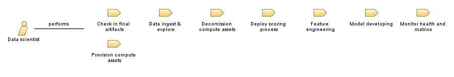

| Role: Data scientist |
 |
|
 |
||
| Primary Performs | ||
|---|---|---|
| Modifies |
|
|
Le role d'un Data scientist est de : Etude des données en possession de l’entreprise qui permettront de définir les données qui seront extraites et traitées, en accord avec les exigences de la direction. Récupération et analyse des données pertinentes liées au processus de production de l’entreprise, à la vente ou encore liées aux données client. · Construction d’algorithmes permettant d’améliorer les résultats de recherches et de ciblage. · Élaboration de modèles prédictifs afin d’anticiper l’évolution des données et tendances relatives à l’activité de l’entreprise. · Modélisation des résultats d’analyse des données pour les rendre lisibles et exploitables par les managers. · Recommandations business auprès de la direction générale afin d’améliorer la prise de décision. Ce travail d’interprétation des données pourra également se faire au travers de la création d’un tableau de bord spécifique et/ou logiciel sur mesure analysant les données traitées. La création de métriques d’aide à la décision pourra avoir une influence conséquente sur la stratégie de l’entreprise. |